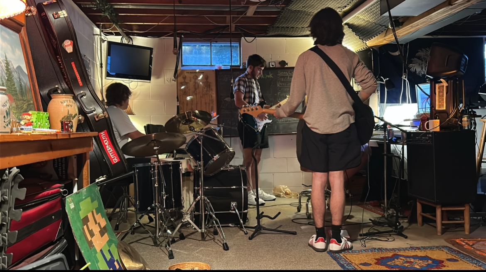
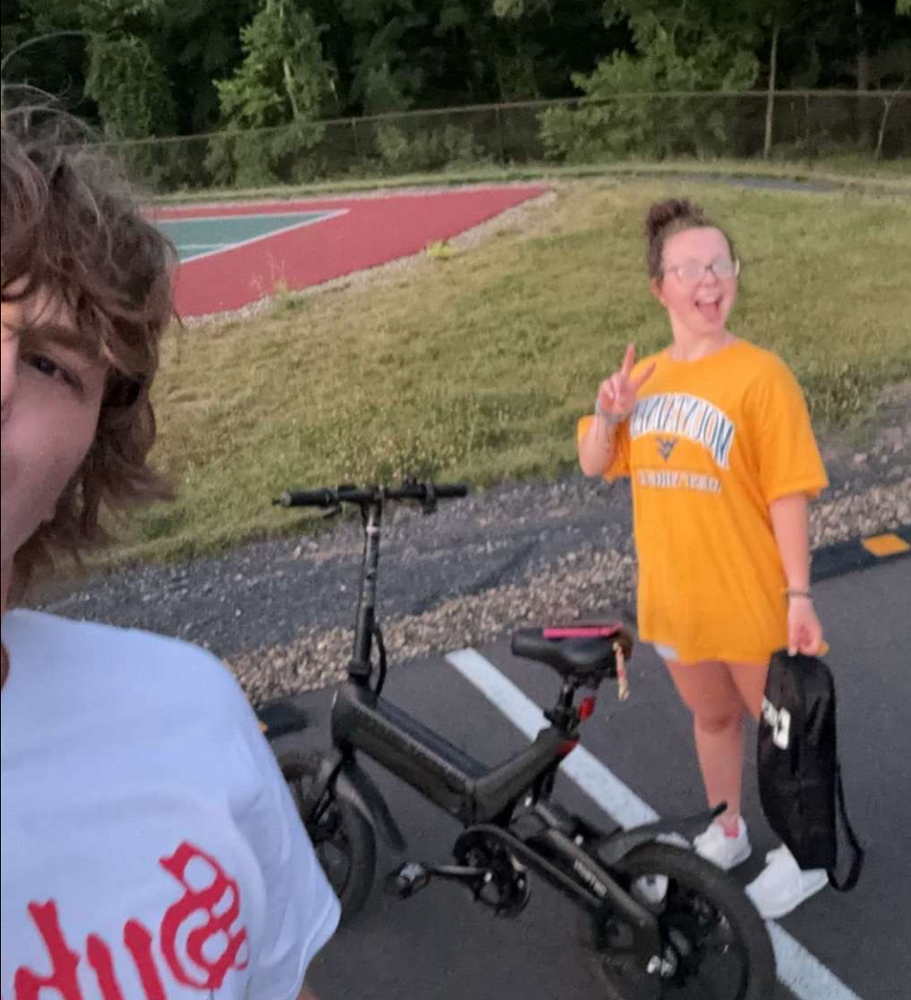
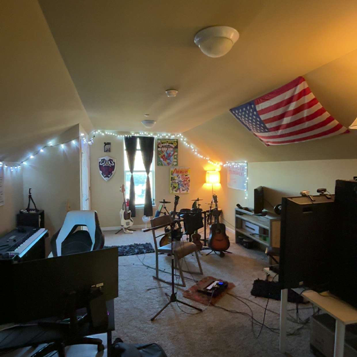
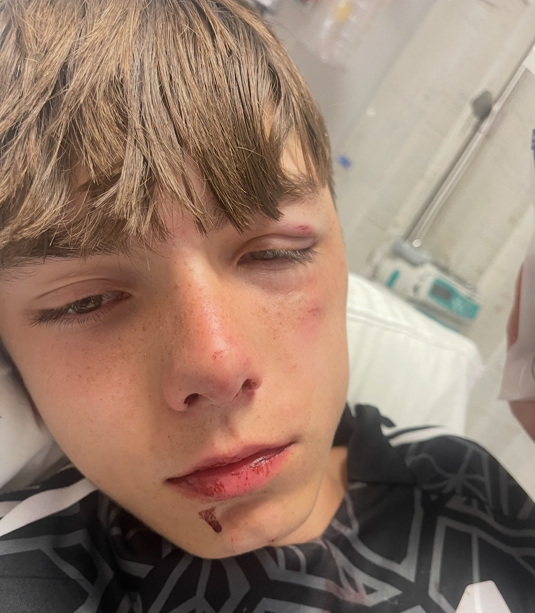

It was a chilly evening in the fall of last year. I had made a journey home to celebrate my birthday with my family and to have a jam session with my friends. We're all musicians, and we play together for fun and practice. We also played Super Smash Bros, where my friend somehow unlocked Ultra Instinct for Steve. After getting tossed around for a while, we were all hungry — luckily, there was a 7-Eleven two streets away. We'd made this journey many times before: on foot, by car, and by bike or e-bike. This time, we chose the bikes.
Me and my bois jamming.
To understand the journey, you must first understand our vehicle. We were riding a mix of bicycles and e-bikes, and I was on one of the e-bikes. The first part of the trip required us to descend a steep incline before the road flattened out. We flew down the hill at roughly 15–20 mph. It was arguably very dangerous — no helmets, no gear, and a 40-degree decline — but we’d done it so many times that being safe felt weird.
The bike in question and the guy who killed us with Steve.
This is where the hero of this tale meets his downfall. As I sped down the hill, we were all smiling and laughing — it was only 10:30 PM and we had plenty of time to keep having fun. Then something happened. To this day, I still don’t know why, but the front wheel of my bike suddenly locked up while going 20 mph and came to a complete stop. The sudden loss of momentum catapulted me over the handlebars. I instinctively put my hands out to avoid face-planting into the road. After the crash, I slowly got up and tested my legs — they were fine. But when I tried to move my left hand, a sharp pain shot up my arm. It was already swelling, and my wrist was as wide as my hand. Despite this, I didn’t think it was broken. Everyone there assured me it wasn’t, and even a licensed physical therapist said it looked fine. So I drove back home to Morgantown and went on with life — still feeling intense pain.
The swollen wrist that was definitely "not" broken.
Now, I’m sure you’re wondering how I found out it was broken — and whether I went to a hospital. The answer to both is yes, but it’s a little funnier than you’d expect. Two days had passed, and I still believed my wrist was fine despite the pain. Then my younger brother got injured in a soccer match. While playing goalie for his high school team, he dove to block a ball and another player fell on his head, fracturing his orbital bone. My mom took him to Ruby Memorial Hospital, and I showed up to check on him. As soon as my mom and the doctor saw my wrist, their jaws dropped. I was quickly booked alongside my brother and received an X-ray, which confirmed the break. I needed a cast. The hospital gave both of us pain meds and treated us — they set my bone and performed surgery on my brother, installing a titanium plate in his face. Over the next six months, I couldn’t play guitar or work out properly. Now, all that remains is a clicking in my wrist and a healthy fear of e-bikes.
My brother and his unfortunate face.